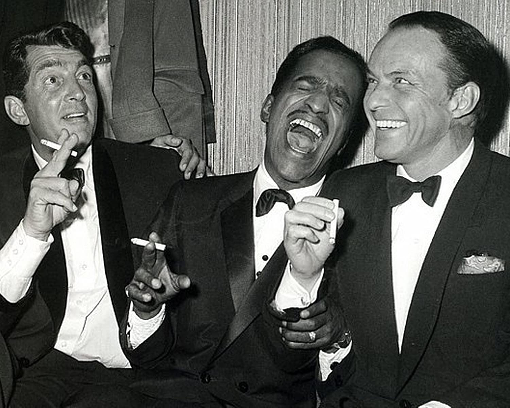

Career Intro
Dean Martin started his music career at the age of 17. Two years later Martin went on his first tour as a lead vocalist. By 1946 Dean had a 15 minitue radio special and had several songs recorded with Diamond records.
By 1950, Dean teamed up with Jerry Lewis and obtained a NBC radio special. The duo would go on to make 16 movies together.
He began the Dean Martin Show in 1965. Once he started performing in Las Vegas with his famous friends they became known as the Rat Pack. Martin would go on to make over 50 movies.
Skills
- Actor
- Over 60 films
- The Dean Martin Show lasted 8 years
- Singer
- Over 30 studio albumns
- Radio Personality
Top Published Works
- The Door Is Still Open to My Heart
- Gentle on My Mind
- Houston
- For the Good Times
- Dream with Dean
- Dean Martin Hits Again
- Somewhere There's a Someone
Dean Martin's Residences
- Steubenville, Ohio (1917 - 1938)
- New York City, New York (1938 - 1950)
- Las Vegas, Nevada (1948 - 1969)
- Beverly Hills, California (1964 - 1995)
Collaborators
- Rat Pack
- Frank Sinatra
- Sammy Davis Jr.
- Peter Lawford
- Joey Bishops
- Jerry Lewis
- Caterina Valente
- John Wayne
Awards
- Nominated for 4 Primetime Emmy Awards
- 1967 Golden Globe Award
- Best Male TV Star for The Dean Martin Show
- Star On The Walk of Fame
- Golden Apple Award